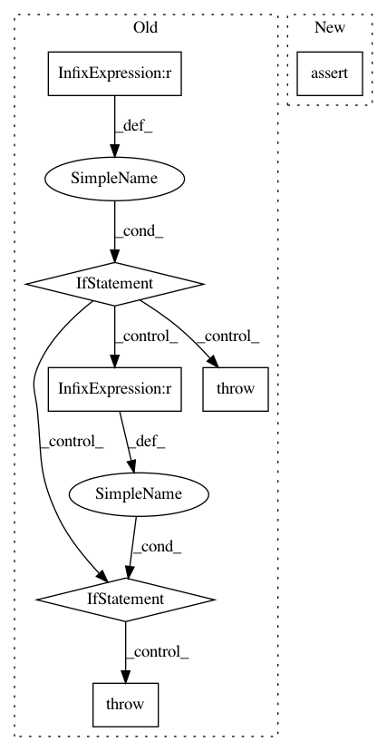

44d558ad7f13251650f40475eef6652df59e4b09,keras/layers/containers.py,Graph,set_previous,#Graph#Any#Any#,254
Before Change
l.reset_states()
def set_previous(self, layer, connection_map={}):
if self.nb_input != layer.nb_output:
raise Exception("Cannot connect layers: "
"input count does not match output count.")
if self.nb_input == 1:
self.inputs[self.input_order[0]].set_previous(layer)
else:
if not connection_map:
raise Exception("Cannot attach multi-input layer: "
"no connection_map provided.")
for k, v in connection_map.items():
if k in self.inputs and v in layer.outputs:
self.inputs[k].set_previous(layer.outputs[v])
else:
raise Exception("Invalid connection map.")
def get_input(self, train=False):
if len(self.inputs) == len(self.outputs) == 1:
return self.inputs[self.input_order[0]].get_input(train)
else:
After Change
def set_weights(self, weights):
for i in range(len(self.layers)):
nb_param = len(self.layers[i].trainable_weights) + len(self.layers[i].non_trainable_weights)
self.layers[i].set_weights(weights[:nb_param])
weights = weights[nb_param:]
def get_config(self):
return {"name": self.__class__.__name__,
"layers": [layer.get_config() for layer in self.layers]}
In pattern: SUPERPATTERN
Frequency: 3
Non-data size: 7
Instances
Project Name: keras-team/keras
Commit Name: 44d558ad7f13251650f40475eef6652df59e4b09
Time: 2016-02-22
Author: Nicholas.Eggert@target.com
File Name: keras/layers/containers.py
Class Name: Graph
Method Name: set_previous
Project Name: OpenNMT/OpenNMT-py
Commit Name: bfb1cb4924236b452eb66ca06b3af8ac465f1d3b
Time: 2018-12-09
Author: benzurdopeters@gmail.com
File Name: preprocess.py
Class Name:
Method Name: main
Project Name: asyml/texar
Commit Name: af461df627ef660d1a71b6981dedb4e4b504ba9a
Time: 2017-09-25
Author: junxianh2@gmail.com
File Name: txtgen/modules/connectors/connectors.py
Class Name: StochasticConnector
Method Name: _build